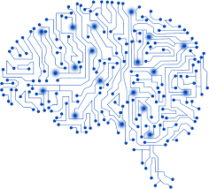

Seminario de Tecnologia
HTML5
HTML5 (HyperText Markup Language, versión 5) es la quinta revisión importante del lenguaje básico de la World Wide Web, HTML. HTML5 especifica dos variantes de sintaxis para HTML: una «clásica», HTML (text/html), conocida como HTML5, y una variante XHTML conocida como sintaxis XHTML5 que deberá servirse con sintaxis XML (application/xhtml+xml).
HTML5 establece una serie de nuevos elementos y atributos que reflejan el uso típico de los sitios web modernos. Algunos de ellos son técnicamente similares a las etiquetas "div" y "span", pero tienen un significado semántico, como por ejemplo "nav" (bloque de navegación del sitio web) y "footer".
Incorpora etiquetas (canvas 2D y 3D, audio, vídeo) con codecs para mostrar los contenidos multimedia. Actualmente hay una lucha entre imponer codecs libres (WebM + VP8) o privados (H.264/MPEG-4 AVC). Etiquetas para manejar grandes conjuntos de datos: Datagrid, Details, Menu y Command. Permiten generar tablas dinámicas que pueden filtrar, ordenar y ocultar contenido en cliente.
Mejoras en los formularios. Nuevos tipos de datos (eMail, number, url, datetime …) y facilidades para validar el contenido sin Javascript. Con el uso de HTML5, se puede reducir la dependencia de los plug-ins que tenemos que tener instalados para poder ver una determinada web. Caso emblemático, el de Adobe Flash, que se ve claramente perjudicado por la instauración de este estándar.
Mas Informacion Relacionada con el Tema
HTML5
¿QUÉ ES HTML5??
El popular HTML5 que es y para que funciona?
¿Qué es HTML5 y qué cambios introduce??
Videos Relacionados con el Tema
Qué es HTML y cómo funciona?
¿Qué es... HTML5??
Curso HTML5?
Tutoriales HTML5: 1. Estructura Básica?
CSS3
CSS (siglas en inglés de Cascading Style Sheets), en español "Hojas de estilo en cascada", es un lenguaje de diseño gráfico para definir y crear la presentación de un documento estructurado escrito en un lenguaje de marcad.
Es muy usado para establecer el diseño visual de los documentos web, e interfaces de usuario escritas en HTML o XHTML; el lenguaje puede ser aplicado a cualquier documento XML, incluyendo XHTML, SVG, XUL, RSS, etcétera. También permite aplicar estilos no visuales, como las hojas de estilo auditivas.
CSS está diseñado principalmente para marcar la separación del contenido del documento y la forma de presentación de este, características tales como las capas o layouts, los colores y las fuentes.
La separación del formato y el contenido hace posible presentar el mismo documento marcado en diferentes estilos para diferentes métodos de renderizado, como en pantalla, en impresión, en voz (mediante un navegador de voz o un lector de pantalla, y dispositivos táctiles basados en el sistema Braille.
Mas Informacion Relacionada con el Tema
Definición, usos y ventajas del lenguaje CSS3?
Introducción a CSS3?
Breve introducción a CSS3?
CSS3?
Videos Relacionada con el Tema
¿Qué es CSS? bien explicado?
¿Qué es CSS y para que sirve??
Como hacer un menú de navegación desplegable con Animaciones CSS3?
Selectores Básicos de CSS - Curso de CSS3 desde ceroi?
JAVASCRIPT

JavaScript (abreviado comúnmente JS) es un lenguaje de programación interpretado, dialecto del estándar ECMAScript. Se define como orientado a objetos,basado en prototipos, imperativo, débilmente tipado y dinámico.
Se utiliza principalmente en su forma del lado del cliente (client-side), implementado como parte de un navegador web permitiendo mejoras en la interfaz de usuario y páginas web dinámicas.
JavaScript se diseñó con una sintaxis similar a C, aunque adopta nombres y convenciones del lenguaje de programación Java. Sin embargo, Java y JavaScript tienen semánticas y propósitos diferentes.
Todos los navegadores modernos interpretan el código JavaScript integrado en las páginas web. Para interactuar con una página web se provee al lenguaje JavaScript de una implementación del Document Object Model (DOM).
Mas Informacion Relacionada con el Tema
¿Qué es JavaScript??
JavaScript?
Fundamentos de JavaScript?
Tutorial JavaScript?
Videos Relacionados con el Tema
Curso Básico de Javascript desde 0?
¿Qué es JavaScript? bien explicado?
Aplicación de Productos con Javascript Orientado a Objetos?
Java y Javascript | Diferencias y Similitudes?
PROGRESSIVE WEB APPS
Progressive web apps (o aplicaciones web progresivas), es un término que se da a una nueva generación de aplicaciones que incrementan su funcionalidad, conforme las capacidades del dispositivo en el que se ejecutan, incrementan, de ahí la palabra progresiva.
La siguiente parte del nombre web, hace referencia a que se construyen utilizando estándares de desarrollo web, algunos ya conocidos como HTML, CSS y javaScript; y una nueva generación de APIs de javaScript.
La parte final app es porque las Progressive Web Apps se comportan como aplicaciones web nativas, pero usan tecnologías web. Se carga rápidamente, incluso con redes débiles, envía notificaciones push relevantes, tiene un ícono en la pantalla principal y se carga como experiencia de pantalla completa y de primer nivel.
En términos muy simplistas, son páginas web que se comportan como aplicaciones nativas. Están disponibles para los usuarios a partir de la primera visita en una pestaña del navegador y no requieren instalación. A medida que el usuario compila progresivamente una relación con la app con el paso del tiempo, se hace más y más poderosa.
Mas Informacion Relacionada con el Tema
Progressive Web Apps ¿qué son y por qué van a mejorar mis visitas??
¿Qué es una Aplicación Web Progresiva o PWA??
Qué son las Aplicaciones Web Progresivas?
Las Progressive Web Apps: Todo lo que se tiene que saber?
Mas Informacion Relacionada con el Tema
WEB APP PROGRESIVA (la web del FUTURO)?
PWA | Progressive Web Apps, Introducción a las Aplicaciones Web Progresivas?
Que es un Progressive Web App??
Web Apps | Qué son y cómo hacer una fácilmente?
INTELIGENCIA ARTIFICIAL

La inteligencia artificial (IA), también llamada inteligencia computacional, es la inteligencia exhibida por máquinas. En ciencias de la computación, una máquina «inteligente» ideal es un agente racional flexible que percibe su entorno y lleva a cabo acciones que maximicen sus posibilidades de éxito en algún objetivo o tarea.
el término inteligencia artificial se aplica cuando una máquina imita las funciones «cognitivas» que los humanos asocian con otras mentes humanas, como por ejemplo: «aprender» y «resolver problemas».
En la Inteligencia Artificial, se han desarrollado diferentes lenguajes específicos para los diferentes campos de aplicación. Estos lenguajes en su mayoría cuentan con una serie de características comunes que podemos resumir de la siguiente forma: Este tipo de software ofrece una gran modularidad.
Poseen gran capacidad de tomar decisiones de programación hasta el último momento, es decir cuando el programa ya está ejecutándose. El término «inteligencia artificial» fue acuñado formalmente en 1956 durante la conferencia de Dartmouth, pero para entonces ya se había estado trabajando en ello durante cinco años en los cuales se había propuesto muchas definiciones distintas que en ningún caso habían logrado ser aceptadas totalmente por la comunidad investigadora. La IA es una de las disciplinas más nuevas junto con la genética moderna.
Machine Learning
El aprendizaje automático o aprendizaje automatizado o aprendizaje de máquinas (del inglés, "Machine Learning") es el subcampo de las ciencias de la computación y una rama de la inteligencia artificial, cuyo objetivo es desarrollar técnicas que permitan que las computadoras aprendan. De forma más concreta, se trata de crear programas capaces de generalizar comportamientos a partir de una información suministrada en forma de ejemplos.
El aprendizaje automático tiene una amplia gama de aplicaciones, incluyendo motores de búsqueda, diagnósticos médicos, detección de fraude en el uso de tarjetas de crédito, análisis del mercado de valores, clasificación de secuencias de ADN, reconocimiento del habla y del lenguaje escrito, juegos y robótica.
Deep Learning
Aprendizaje profundo (en inglés, deep learning) es un conjunto de algoritmos de clase aprendizaje automático (en inglés, machine learning) que intenta modelar abstracciones de alto nivel en datos usando arquitecturas compuestas de transformaciones no lineales múltiples.
El aprendizaje profundo es parte de un conjunto más amplio de métodos de aprendizaje automático basados en asimilar representaciones de datos. Una observación (por ejemplo, una imagen) puede ser representada en muchas formas (por ejemplo, un vector de píxeles), pero algunas representaciones hacen más fácil aprender tareas de interés (por ejemplo, "¿es esta imagen una cara humana?") sobre la base de ejemplos, y la investigación en este área intenta definir qué representaciones son mejores y cómo crear modelos para reconocer estas representaciones.
Red Neuronal
Las redes neuronales (también conocidas como sistemas conexionistas) son un modelo computacional basado en un gran conjunto de unidades neuronales simples (neuronas artificiales), de forma aproximadamente análoga al comportamiento observado en los axones de las neuronas en los cerebros biológicos.
Las redes neuronales suelen consistir en varias capas o un diseño de cubo, y la ruta de la señal atraviesa de adelante hacia atrás. Propagación hacia atrás es donde se utiliza la estimulación hacia adelante o en el "frente" para restablecer los pesos de las unidades neuronales y esto a veces se realiza en combinación con una formación en la que se conoce el resultado correcto.
Mas Informacion Relacionada con el Tema
Definicion de inteligencia artificial?
Que es la Inteligencia Artificial??
El modelo de redes neuronales?
¿Qué es y para qué sirve una red neuronal artificial??
Mas Informacion Relacionada con el Tema
¿Qué es el Machine Learning?¿Y Deep Learning??
¿Qué es una Red Neuronal? Parte 1 : La Neurona?
¿Qué es la inteligencia artificial??
Que es la IA??
CRIPTOMONEDAS

La primera criptomoneda que empezó a operar fue el bitcoin en 2009 y, desde entonces, han aparecido muchas otras con diferentes características y protocolos como Litecoin, Ethereum, Ripple, Dogecoin.
En los sistemas de criptomonedas, se garantiza la seguridad, integridad y equilibrio de sus estados de cuentas (contabilidad) por medio de un entramado de agentes (transferencia de archivo segmentada o transferencia de archivo multifuente) que se verifican (desconfían) mutuamente llamados mineros, que son, en su mayoría, público en general y protegen activamente la red (el entramado) al mantener una alta tasa de procesamiento de algoritmos, con la finalidad de tener la oportunidad de recibir una pequeña propina, que se reparte de manera aleatoria.
Está previsto que en el futuro la computación cuántica pueda llegar a ser una realidad, lo que rompería el equilibrio en caso de que los desarrolladores no pudieran implementar a tiempo el sistema para usar algoritmos poscuánticos, por tratarse de una tecnología propietaria.
Las criptomonedas hacen posible el llamado internet del valor, también conocido por las siglas IoV (del inglés internet of value), también llamado Internet del dinero: son aplicaciones de Internet que permiten el intercambio de valor en forma de criptomonedas.
Mas Informacion Relacionada con el Tema
Como puedes invertir en criptomonedas?
Criptomonedas seguirán cayendo, bitcoin llegaría a US$ 4,000?
Criptomonedas – El nuevo oro?
Las cinco criptomonedas más valiosas?
Videos Relacionados con el Tema
3 cosas que no te dicen sobre las criptomonedas?
Entiende Bitcoin y Ethereum - Explicación técnica a fondo en español sobre Criptomonedas?
¿Cómo funcionan las criptomonedas? (Como Bitcoin)?
Que Son Las Criptomonedas? Explicacion?
BLOCKCHAIN
Una cadena de bloques1 o cadena articulada, conocida en inglés como blockchain, es una estructura de datos en la que la información contenida se agrupa en conjuntos (bloques) a los que se les añade metainformaciones relativas a otro bloque de la cadena anterior en una línea temporal, de manera que gracias a técnicas criptográficas, la información contenida en un bloque sólo puede ser repudiada o editada modificando todos los bloques posteriores.
Esta propiedad permite su aplicación en entorno distribuido de manera que la estructura de datos blockchain puede ejercer de base de datos pública no relacional que contenga un histórico irrefutable de información.
En la práctica ha permitido, gracias a la criptografía asimétrica y las funciones de resumen o hash, la implementación de un registro contable (ledger) distribuido que permite soportar y garantizar la seguridad de dinero digital.
Siguiendo un protocolo apropiado para todas las operaciones efectuadas sobre la blockchain, es posible alcanzar un consenso sobre la integridad de sus datos por parte de todos los participantes de la red sin necesidad de recurrir a una entidad de confianza que centralice la información.
Mas Informacion Relacionada con el Tema
Cadena de bloques?
What is Blockchain Technology??
¿Qué es la Cadena de Bloques (Blockchain)??
Qué es la tecnología blockchain y cómo funciona?
Videos Relacionados con el Tema
Cómo funciona Blockchain. Explicación sencilla?
¿Cómo usar Blockchain? | Oportunidades de Negocio para tu empresa?
Otros usos de 'blockchain' que nadie esperaba?
¿Qué es y cómo funciona el BlockChain?
CYBER SEGURIDAD

La seguridad cibernética comprende tecnologías, procesos y controles que están diseñados para proteger sistemas, redes y datos de ciberataques. La seguridad cibernética eficaz reduce el riesgo de ciberataques y protege a las organizaciones y personas de la explotación no autorizada de sistemas, redes y tecnologías
La seguridad cibernética es la práctica de proteger sistemas, redes y programas contra ataques digitales. Estos ataques generalmente apuntan a acceder, cambiar o destruir información sensible; extorsionar dinero de los usuarios; o interrumpir los procesos comerciales normales.
Implementar medidas efectivas de ciberseguridad es particularmente desafiante hoy en día porque hay más dispositivos que personas, y los atacantes se están volviendo más innovadores.
Un enfoque exitoso de seguridad cibernética tiene múltiples niveles de protección repartidos por las computadoras, redes, programas o datos que uno intenta mantener seguros. En una organización, las personas, los procesos y la tecnología deben complementarse entre sí para crear una defensa efectiva contra los ciberataques.
Mas Informacion Relacionada con el Tema
¿Sabes qué es la ciberseguridad y para qué sirve??
Ciberseguridad: protección digital a todos los niveles?
Ciberseguridad?
Especialista en ciberseguridad?
Videos Relacionados con el Tema
Ciberseguridad para la empresa?
Introducción a la ciberseguridad?
Ciberseguridad para la empresa?
Principios de la ciberseguridad en el contexto actual?
REALIDAD VIRTUAL

La realidad virtual (RV) es un entorno de escenas u objetos de apariencia real. La acepción más común refiere a un entorno generado mediante tecnología informática, que crea en el usuario la sensación de estar inmerso en él.
Dicho entorno es contemplado por el usuario a través de un dispositivo conocido como gafas o casco de realidad virtual. Este puede ir acompañado de otros dispositivos, como guantes o trajes especiales, que permiten una mayor interacción con el entorno así como la percepción de diferentes estímulos que intensifican la sensación de realidad.
El término realidad virtual (RV) se popularizó a finales de la década de 1980 por Jaron Lanier, uno de los pioneros del campo. A mismo tiempo, también apareció el término Realidad Artificial (RA). 1 En 1982 el término ciberespacio fue acuñado en una novela por W. Gibson ("Burning Chrome").
Además, establece que "las aplicaciones de realidad virtual sumergen al usuario en un entorno generado por computadora que simula la realidad mediante el uso de dispositivos interactivos, que envían y reciben información y se usan como gafas, auriculares, guantes o trajes para el cuerpo".
Mas Informacion Relacionada con el Tema
Realidad Virtual ?
Que es Realidad Virtual??
Qué es la VR: historia y tipos de gafas de realidad virtual?
Realidad Virtual?
Videos Relacionados con el Tema
Cómo Hacer unas Gafas de Realidad Virtual en Casa?
REALIDAD VIRTUAL Concepto-Origenes- ventajas y desventajas?
Realidad Virtual: ¿Cómo funciona? y Usos?
Como funciona la realidad virtual en tu móvil?
REALIDAD AUMENTADA

La realidad aumentada (RA) es el término que se usa para definir la visión de un entorno físico del mundo real, a través de un dispositivo tecnológico. Este dispositivo o conjunto de dispositivos, añaden información virtual a la información física ya existente; es decir, una parte sintética virtual a la real. De esta manera; los elementos físicos tangibles se combinan con elementos virtuales, creando así una realidad aumentada en tiempo real.
La realidad aumentada es diferente de la realidad virtual: sobre la realidad material del mundo físico monta una realidad visual generada por la tecnología, en la que el usuario percibe una mezcla de las dos realidades; en cambio, en la realidad virtual el usuario se aísla de la realidad material del mundo físico para sumergirse en un escenario o entorno totalmente virtual.
Con la ayuda de la tecnología; por ejemplo, añadiendo la visión por un computador y reconocimiento de objetos, la información sobre el mundo real alrededor del usuario, se convierte en interactiva y digital.
La información artificial sobre el medio ambiente y los objetos puede ser almacenada y recuperada como una capa de información en la parte superior de la visión del mundo real. La realidad aumentada de investigación explora la aplicación de imágenes generadas por ordenador en tiempo real a secuencias de vídeo como una forma de ampliar el mundo real.
Mas Informacion Relacionada con el Tema
Realidad Aumentada?
¿En qué consiste la realidad aumentada??
Realidad aumentada para iOS?
Realidad Aumentada: el mundo real con otros ojos?
Videos Relacionados con el Tema
Realidad Aumentada: ¿Cómo funciona? y Usos?
Top 5: Los mejores usos para la realidad aumentada?
Introducción a la Realidad Aumentada?
hacer realidad aumentada como funciona?
REALIDAD MIXTA
La realidad mixta (RM), también llamada a veces realidad híbrida, es la combinación de realidad virtual y realidad aumentada. Esta combinación permite crear nuevos espacios en los que interactúan tanto objetos y/o personas reales como virtuales. Es decir, se puede considerar como una mezcla entre la realidad, realidad aumentada, virtualidad aumentada y realidad virtual.
El término realidad mixta no debe confundirse con el de realidad aumentada o RA. La realidad aumentada genera los estímulos a tiempo real para la interacción del usuario, los cuales se superponen sobre el entorno físico de este, mientras que la realidad mixta no sólo permite la interacción del usuario con el entorno virtual sino que también permite que objetos físicos del entorno inmediato del usuario sirvan como elementos de interacción con el entorno virtual.
En 1994 Paul Milgram y Fumio Kishino definieron el concepto de realidad mixta como cualquier espacio entre los extremos del continuo de la virtualidad. Este continuo de la virtualidad se extiende desde el mundo completamente real hasta el entorno completamente virtual, encontrándose entre medio de estos la realidad aumentada y realidad virtual.
Como ya se ha dicho, la realidad mixta permite la incorporación de objetos gráficos generados por ordenador en una escena tridimensional del mundo real o bien la incorporación de objetos reales en un mundo virtual.Las principales características son tres: Permite combinar ámbitos reales y virtuales, Es una tecnología interactiva y en tiempo real, Se puede registrar en tres dimensiones.
Mas Informacion Relacionada con el Tema
Realidad mixta?
Realidad mixta – ¿Qué es y qué oportunidades nos ofrecerá??
Qué es realidad mixta: Aplicaciones y ejemplos?
¿Qué es la "realidad mixta" y por qué dicen que 2018 será su año??
Videos Relacionados con el Tema
Realidad mixta: tu ordenador será capaz de transmitir sensaciones?
Documental móvil con realidad mixta?
Que es la Realidad Mixta?
Desarrollo de aplicaciones - Realidad Mixta?
IOT (INTERNET DE LAS COSAS)

Internet de las cosas (en inglés, Internet of Things, abreviado IoT; IdC, por sus siglas en español) es un concepto que se refiere a la interconexión digital de objetos cotidianos con Internet. Alternativamente, Internet de las cosas es la conexión de Internet con más cosas u objetos que con personas.
También, se suele conocer como Internet de todas las cosas o Internet en las cosas. Si los objetos de la vida cotidiana tuvieran incorporadas etiquetas de radio, podrían ser identificados y gestionados por otros equipos, de la misma manera que si lo fuesen por seres humanos.
El concepto de Internet de las cosas fue propuesto por Kevin Ashton en el Auto-ID Center del MIT en 1999, donde se realizaban investigaciones en el campo de la identificación por radiofrecuencia en red (RFID) y tecnologías de sensores.
Por ejemplo, si los libros, termostatos, refrigeradores, la paquetería, lámparas, botiquines, partes automotrices, entre otros, estuvieran conectados a Internet y equipados con dispositivos de identificación, no existirían, en teoría, artículos fuera de stock o medicinas caducas; sabríamos exactamente la ubicación, cómo se consumen en el mundo; el extravío sería cosa del pasado, y sabríamos qué está encendido y qué está apagado en todo momento.
Mas Informacion Relacionada con el Tema
Internet de las cosas?
Internet de las cosas (IoT)?
Internet of Things (IoT)?
IoT - Internet of Things?
Videos Relacionados con el Tema
Internet de las cosas (IoT) | ¿En qué consiste y cómo funciona??
El Internet de las cosas | ¿Qué es y cómo funciona??
Top 5 IOT?
¿Qué es el Internet de las Cosas? / What is Internet of things??
MECATRONICA
La mecatrónica es una disciplina que une la ingenieria mecánica, ingenieria electronica, ingenieria de control e ingenieria informática, y sirve para diseñar y desarrollar productos que involucren sistemas de control para el diseño de productos o procesos inteligentes, lo cual busca crear maquinaria más compleja para facilitar las actividades del ser humano a través de procesos electrónicos en la industria mecánica, principalmente. Debido a que combina varias ingenierías en una sola, su punto fuerte es la versatilidad.
la mecatrónica como una disciplina integradora de las áreas de mecánica, electronica e informatica cuyo objetivo es proporcionar mejores productos, procesos y sistemas. La mecatrónica no es, por tanto, una nueva rama de la ingenieria, sino un concepto recientemente desarrollado que enfatiza la necesidad de integración y de una interacción intensiva entre diferentes áreas de la ingeniería.
Mecatrónica es la combinación sinergia de la ingeniería mecánica de precisión, de la electronica, del control automatico y de los sistemas para el diseño de productos y procesos", la cual busca crear maquinaria más compleja para facilitar las actividades del ser humano a través de procesos electrónicos en la industria mecánica principalmente.
El campo ocupacional actual de la mecatrónica está en empresas de la industria automotriz, manufacturera, petroquímica, metal-mecánica, alimentos y electromecánica, realizando sobre todo actividades de diseño, manufactura, programación de componentes y sistemas industriales y equipo especializado, así como en la promoción y activación de empresas de servicios profesionales.
Mas Informacion Relacionada con el Tema
¿QUE ES MECATRONICA??
Ingeniería mecatrónica?
Definición de Mecatrónica?
Mecatrónica?
Videos Relacionada con el Tema
¿Qué es la ingeniería mecatrónica? Todo lo que debes saber?
Qué es la Mecatrónicas?
Definición de Mecatrónica?
MECATRONICA. Capacitarse para los autos que vendrán?
3D PRINTING

La impresión 3D es un grupo de tecnologías de fabricación por adición donde un objeto tridimensional es creado mediante la superposición de capas sucesivas de material. Las impresoras 3D son por lo general más rápidas, más baratas y más fáciles de usar que otras tecnologías de fabricación por adición, aunque como cualquier proceso industrial, estarán sometidas a un compromiso entre su precio de adquisición y la tolerancia en las medidas de los objetos producidos.
Las impresoras 3D ofrecen a los desarrolladores del producto la capacidad para imprimir partes y montajes hechos de diferentes materiales con diferentes propiedades físicas y mecánicas, a menudo con un simple proceso de ensamble. Las tecnologías avanzadas de impresión 3D pueden incluso ofrecer modelos que pueden servir como prototipos de producto.
Desde 2003 ha habido un gran crecimiento en la venta de impresoras 3D. De manera inversa, el coste de las mismas se ha reducido. Esta tecnología también encuentra uso en campos tales como joyería, calzado, diseño industrial, arquitectura, ingeniería y construcción, automoción y sector aeroespacial, industrias médicas, educación, sistemas de información geográfica, ingeniería civil y muchos otros.
En 1981, Hideo Kodama, del Instituto Municipal de Investigaciones Industriales de Nagoya, inventó dos métodos de fabricación AM de un modelo de plástico tridimensional con un polímero fotoendurecible, en el que el área de exposición a los rayos UV era controlada por un patrón de máscara o transmisor de fibra de barrido.
Mas Informacion Relacionada con el Tema
Impresión 3D: llega el futuro de los sistemas de producción?
Definición de Impresión 3D?
¿Qué es la impresión 3D??
Impresión 3D?
Videos Relacionados con el Tema
Impresora 3D | Cómo Funciona una Impresora 3D | Objetos Impresos en 3D?
Impresoras 3D: Funcionamiento, usos y precios?
¿Qué es una Impresora 3D y cómo funciona??
7 Usos CASEROS para una IMPRESORA 3D?
TECNOLOGIA G5
En telecomunicaciones, 5G son las siglas utilizadas para referirse a la quinta generación de tecnologías de telefonía móvil. La compañía sueca Ericsson aún no ha conseguido alcanzar velocidades de 5 Gbps reales, con demostraciones en directo del estándar previo a la tecnología de red (preestándar) 5G.
En noviembre de 2014, Huawei anuncia la firma de un acuerdo con la operadora móvil rusa Megafon para estandarizar y desarrollar redes 5G de prueba, en vistas a la Copa Mundial de Fútbol de 2018. En febrero de 2017, la Unión Internacional de Telecomunicaciones (UIT) dependiente de Naciones Unidas reveló alguna de las especificaciones de la tecnología 5G. Entre ellas se incluyen: velocidades de descarga mínimas de 20 Gbps y 10 Gbps de subida, y una latencia de 4 ms.
El programa surcoreano “5Gmobile communication systems based on beam-divisionmultiple access and relays with group cooperation” se formó en 2008. En Europa, Neelie Kroes, la Comisaría Europea, recibió en 2013 50 millones de euros para las investigaciones con el objetivo de entregar la tecnología móvil 5G en 2020.
En 2013, otro proyecto se inició, llamado 5Green, ligado al proyecto METIS y con objetivo de desarrollar redes verdes 5G Móviles. Aquí, el objetivo es desarrollar directrices para la definición de la red de nueva generación con atención especial a aspectos de eficiencia energética, sostenibilidad y accesibilidad.
Mas Informacion Relacionada con el Tema
La introducción de las redes 5G – Características y usos
Telefonía móvil 5G
Probamos el G5 SE, la nueva apuesta de LG
LG G5: el primer teléfono modular de la historia
Videos Relacionados con el Tema
La Siniestra tecnología 5G
¿Qué es el 5G y por qué es necesario??
Bienvenidos al 5G, la tecnología que cambiará tu vida
¿Qué es 5G, cuándo llegará y para qué sirve??
RESUMEN DE LO APRENDIDO
HTML5:
Es la quita version del lenguaje basico de la www, este cuenta con una serie de etiquetas y atributos que hacen que una pagina web se vea mas moderna y actualizada. permite la reproducción interna de vídeos, audio y juegos. Todo ello sin que sean necesarios, programas adicionales, como es el caso de Adobe Flash.CSS3:
Es un lenguaje para definir el estilo o la apariencia de las páginas web, escritas con HTML entre otros, para definir la estética de un sitio web en un documento externo y eso mismo permite que modificando ese documento podamos cambiar la estética entera de un sitio web. En este se suman muchas nuevos efectos que harán de la que la parte visual de nuestra página sea mucho más agradable y llamativa, como sombras, transformaciones de figuras, creación sencilla de bordes y efectos 3D.
JAVASCRIPT
Es un lenguaje de programación que te permite crear paginas dinámicas, controlar archivos de multimedia, crear imagenes animadas y muchas otras cosas más. No requiere de compilación ya que el lenguaje funciona del lado del cliente, los navegadores son los encargados de interpretar estos códigos.
PROGRESSIVE WEB APPS
son páginas web, que se comportan como aplicaciones nativas, adaptándose a los dispositivos en los que se visualizan. Estas integran lo mejor de una web y lo mejor de una aplicación móvil nativa, adaptándose por completo al dispositivo desde el que se ejecutan, independientemente del sistema operativo que utilice.
INTELIGENCIA ARTIFICIAL
Es la inteligencia exhibida por máquinas. Esta actúa imitando lo que hace una mente humana, debe ser capaz de percatarse de lo que pasa a su alrededor, procesar esa información, y sacar conclusiones de ella, inferir nuevas conclusiones que no se le han preprogramado. Para la maquina aprender cuenta con dos sistemas de aprendizaje los cuales son el machine learning y el deep learning, La diferencia entre los dos es que la segunda técnica leva el aprendizaje a un nivel más detallado.
CRIPTOMONEDAS
Las criptomonedas son monedas virtuales. Pueden ser intercambiadas y operadas como cualquier otra divisa tradicional, pero están fuera del control de los gobiernos e instituciones financieras. Las criptomonedas pueden ser consideradas como una alternativa a las divisas tradicionales, pero en realidad fueron concebidas como una solución de pago completamente convencional.
BLOCKCHAIN
Es una tecnología que permite la transferencia de datos digitales con una codificación muy sofisticada y de una manera completamente segura. Esta transferencia no requiere de un intermediario centralizado que identifique y certifique la información, sino que está distribuida en múltiples nodos independientes entre sí que la registran y la validan sin necesidad de que haya confianza entre ellos.
CYBERSEGURIDAD
Es la práctica de defender las computadoras y los servidores, los dispositivos móviles, los sistemas electrónicos, las redes y los datos de ataques maliciosos. La ciberseguridad depende de los protocolos criptográficos utilizados para cifrar los correos electrónicos, archivos y otros datos críticos.
REALIDAD VIRTUAL
Es un sistema informático que genera en tiempo real representaciones de la realidad, que de hecho no son más que ilusiones ya que se trata de una realidad ficticia sin ningún soporte físico y que únicamente se da en el interior de los ordenadores. La simulación que hace la realidad virtual se puede referir a escenas virtuales, creando un mundo virtual que sólo existe en el ordenador de lugares u objetos que existen en la realidad.
REALIDAD AUMENTADA
La realidad aumentada es una tecnología que complementa el mundo real con el mundo digital. Superpone imágenes generadas por ordenadores, smartphones, tabletas o visores especiales a lo que sucede en tiempo real, de modo que el usuario tenga una mejor percepción de la realidad. La realidad aumentada no solo ofrece formas divertidas e interactivas para que el usuario común y corriente aprenda, experimente e imagine cosas nuevas, sino que también tiene aplicación en numerosos campos.
REALIDAD MIXTA
Es un espacio en el que se mezclan la interactividad de la realidad virtual y el poder visual de la realidad aumentada. Esta combinación de fuerzas permite al usuario ingresar de lleno en un entorno real, con la particularidad de poder interactuar con elementos virtuales.
IOT
se basa en la interconexión de cualquier producto con cualquier otro de su alrededor, es decir, conectar cualquier objeto y elemento a través de Internet. Que las distintas cosas, objetos y dispositivos que tenemos en casa se comuniquen entre sí y nos ofrezcan datos y detalles sobre su funcionamiento. Si consiguiesen aplicar todo lo que tienen planteado podría suponer no solo una transformación tecnológica sino también económica y social.
MECATRONICA
La Ingeniería Mecatrónica busca crear maquinaria más compleja para facilitar las actividades del ser humano a través de procesos electrónicos en la industria mecánica, principalmente. cubre los límites de frontera común entre la mecánica, la electrónica (microelectrónica), la computación (informática) y el control automatizado, con el propósito de desarrollar productos y procesos inteligentes.
3D PRINTING
La impresión 3D es una tecnología innovadora que permite crear objetos físicos desde un modelo digital. Para poder imprimir algo, primero se requiere un modelo 3D del objeto que desea crear, el cual puede diseñar un software de modelación 3D, o usar un scanner 3D para escanear el objeto a imprimir.